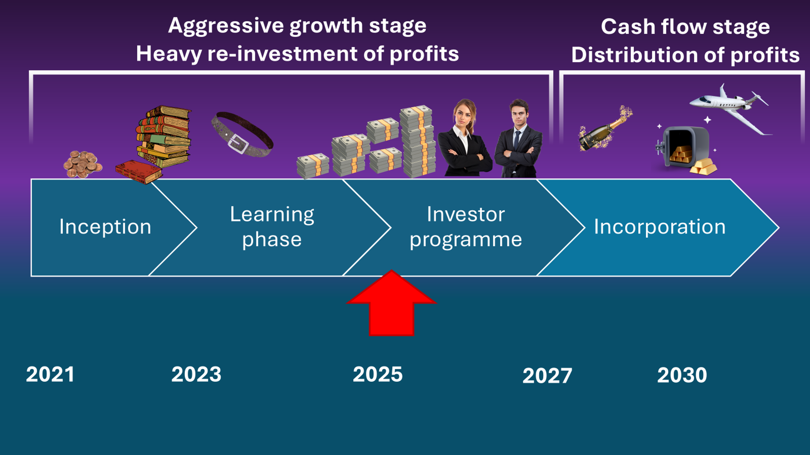

Alpha Centauri will pass through development stages. At each stage, different legal environment applies.
This page lists some legislative provisions relevant to keep the fund operation secure and streamlined.
Future outlook and legal solutions

There are rules and legislation that are relevand to different development stages of the Fund. It is important to know and respect them to avoid clashes with governments, which are always stronger.
Status of investment/trading
In Romania, investment and trading activity is considered as independent activity. No corporate structure is required for this, however, the realized net profit is subject to income tax, depending in which bracket the profit falls
Income tax - Romania
The Manager is based in Romania, where he pays taxes. Since 2024, income tax for trading activity was reduced to 3% of profit per position profit. Appreciation of gold holdings is not taxable. Another amount, up to 10% of total profit has to be paid annually to the national health system.
The broker
Some investment instruments cannot be accessed directly by theFund Manager. In such cases, an intermediary company, called the broker, has to be used to connect investors with financial markers. Alpha Centauri uses the broker XTB, Romanian section.
Legal treatment of Investor deposits
At this stage, the relationship between the Investor and the Manager is resolved through spoken lending agreements. If required, the nominal re-payment date may be specified. Upon withdrawal, the Fund returns the entire principal amount, and the accumulated interest in a separate transaction.
Incorporation stage
Planned transformation of the Fund into a registered investment company is planned for end of 2026 or beginning of 2027. In this case, a new set of legal provisions will apply, and the Investors will be informed in due time. A most likely scenario would be a Limited Liability Company with Investors as becoming shareholders and interest rates converted to dividends.
Long-term vision
Alpha Centauri is supposed to become in a few years a company with well diversified investments and considerable cash flow, that will be a source of supplementary income for all Investors. A best case scenario is that this income becomes so large that Investors could live off it alone.
Contact and info
For any specific questions about legal and tax issues and Fund strategy, please do not hesitate to contact the Manager. If he does not the answer right away, he has contacts whom to ask for up-to-date information.
Life-long learning
At this point the Fund functions smoothly like a well-oiled machine, and corporate obligations are well studied. Nevertheless, the Manager remains committed to continuous studying of the situation on the markets in order to remain profitable and continue delivering generous profits for the Investors.